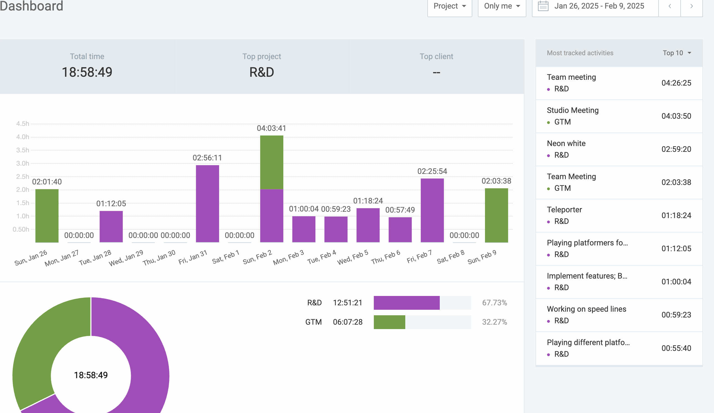
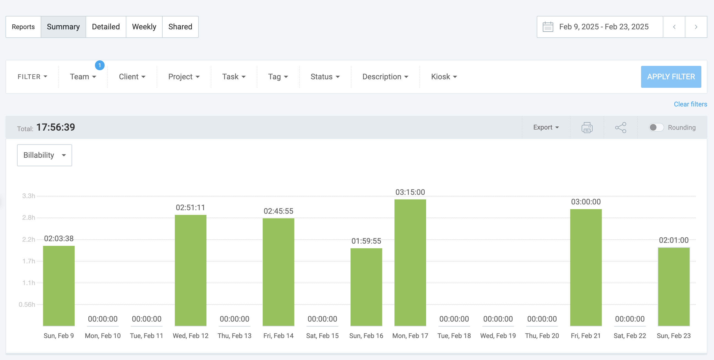

This week, I was mainly focused on nailing the concept for our game. In our team meetings, we decided to have our example game be Neon White.
I spent a few hours playing Neon White in the last few weeks and noted different obstacles, abilities, and level design themes.
It was important to nail down an inspiration game, as it felt at times that we were lacking direction.
I implemented some core abilities this week, including:
A dash that launches the player in their desired direction.
A barebones "teleport blade" that teleports players to a given surface if in range. More work is needed, but it’s a good prototype.
I also implemented art assets into the game, which was critical since the game looked very barebones at the time.
In terms of obstacles, I added:
A "balloon" that serves as an extra jump for the player, allowing us to build unique level challenges.
A boost panel that dramatically increases the player's speed, creating unique challenges.
I ran into a few challenges this MDP cycle. The main one was that my teammates were very busy, so I took on some extra work. Additionally, art assets were lagging behind, so there was some stress there. To overcome these challenges, I decided to do unplanned things like the balloon and boost panels to stay on track.
This was a productive two weeks, but more work needs to be done!

Proof of time worked: hours logged through Clockify
This week, I was mainly focused on nailing the frameworks for our game in our team meetings.
I spent a few hours playing Neon White in the last few weeks and noted different obstacles, abilities, and level design themes. I took inspiration from the book of life in the game.
I implemented some core features this week, including:
A fully functioning "teleport blade" that throws a blade. The blade will either stick to a surface or stop moving after a given time. The player clicks again to teleport to the spot.
An "ability manager". This system lets the player hold up to two ability cards and use them accordingly with left and right click. Heavy inspiration was taken from Neon White's card system. The goal for the visuals is akin to Post Void’s hands.
I also implemented a level based around the grapple hook. It is very fun and showcases a sense of speed for the player.
I ran into a few challenges this MDP cycle. The main one was that I was extremely busy with other classes and work for other student organizations. There wasn’t an easy fix for this besides working hard and making time for WSoft!
This was a productive two weeks, but more work needs to be done!

Proof of time worked: hours logged through Clockify
This week, I didn't do much. I was very busy with midterms and I left soon after for spring break. I did get a few things done
I implemented s features this week, including:
A fully functioning "Slingshot" This obsticale acts a little like the balloon. The player jumps into a "pocket" and gets sent in a given direction choosen by us. It is very fun but needs some refinement and a proper level to showcase the feature
I did some planning this week. We decided to have a small hubworld for each world like Mario 3D World instead of mega hub world like Shadow Generations. These hub worlds will be designed around the features in the level, and will be used as a sort of tutorial
I ran into a few challenges this MDP cycle. The main one was that I was extremely busy with midterms and Spring Break. There wasn’t an easy fix for this besides working hard and making time for WSoft!
This was a solid week, but more work needs to be done!
Proof of time worked: hours logged through Clockify
Returning from spring break, this week was focused on catching up and preparing for future work. I've been traveling most of March and unfortunately had little time to work on Project Parkour, but I managed to complete a few tasks:
I refined the "Satchel" ability, making it function more like a TF2 rocket jump rather than Raze's Satchel in Valorant.
I developed a new approach to level design. Instead of creating full levels directly, I've started building smaller segments called "action blocks." These blocks focus on specific sections of gameplay and can be easily combined to form cohesive levels. I was inspired by a Titanfall 2 level designer to adopt this approach.
With this new approach, I believe I've crafted our finest level yet. This level centers around the Satchel, and I feel it's very engaging and fun!
I encountered significant difficulties this week. I was extremely busy with classwork, club activities, and social commitments, making it challenging to find time to dedicate to this project. However, I believe the work I completed was highly efficient, and much of the planning done this week will be crucial as we approach the end of the cycle. Moving forward, I will focus on creating additional levels and improving quality-of-life features in the final two weeks.
Gameplay footage demonstrating this week's progress